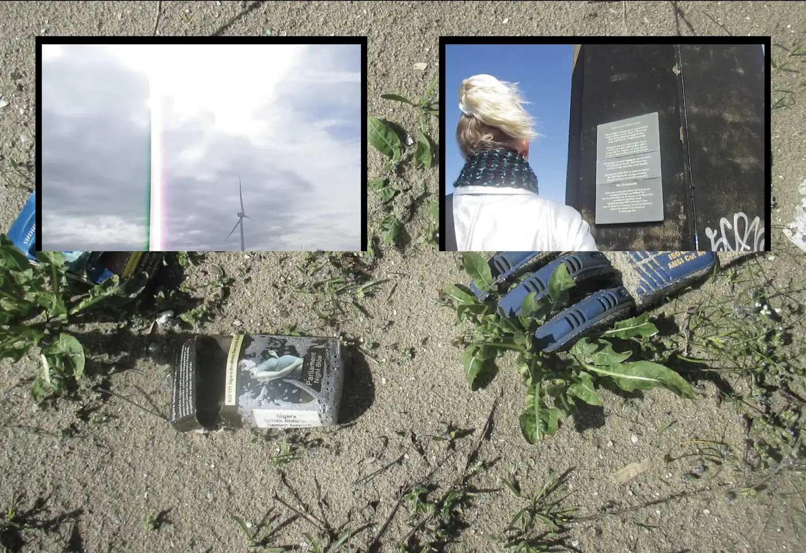
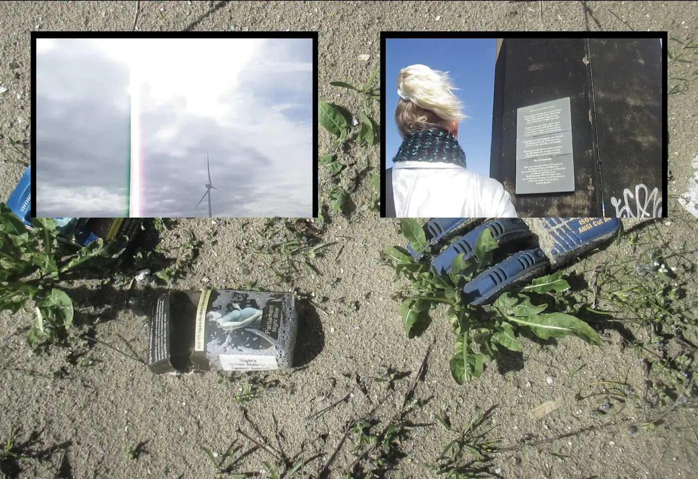
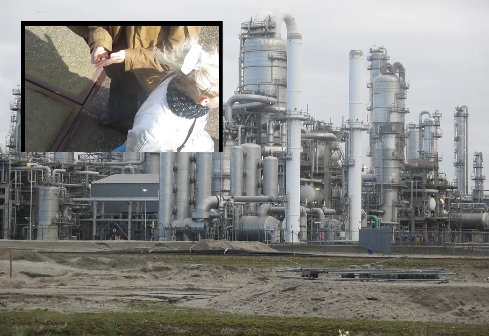
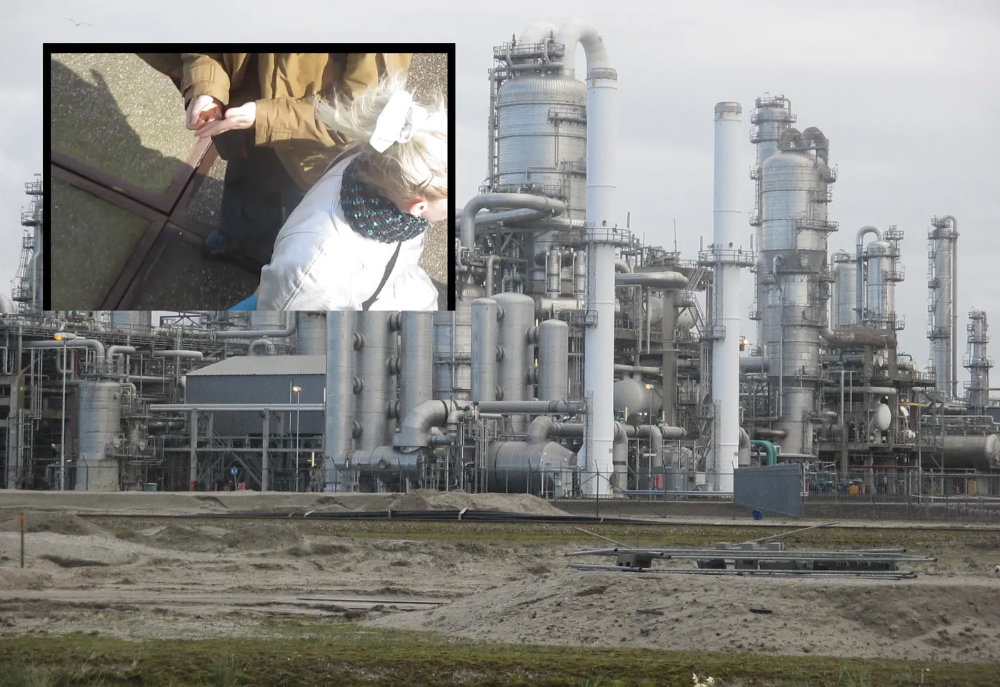

A video documentation of FutureLand and around the Port of Rotterdam for purposes of film as field research practice.
Camera — Canon IXUS 185
Music — Faith in Strangers Andy Stott
Film · Photography
2:30min
The Hague, April 2025
Music — Faith in Strangers Andy Stott
Film · Photography
2:30min
The Hague, April 2025


 


 
